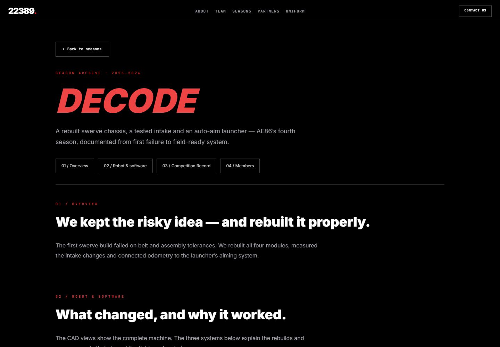
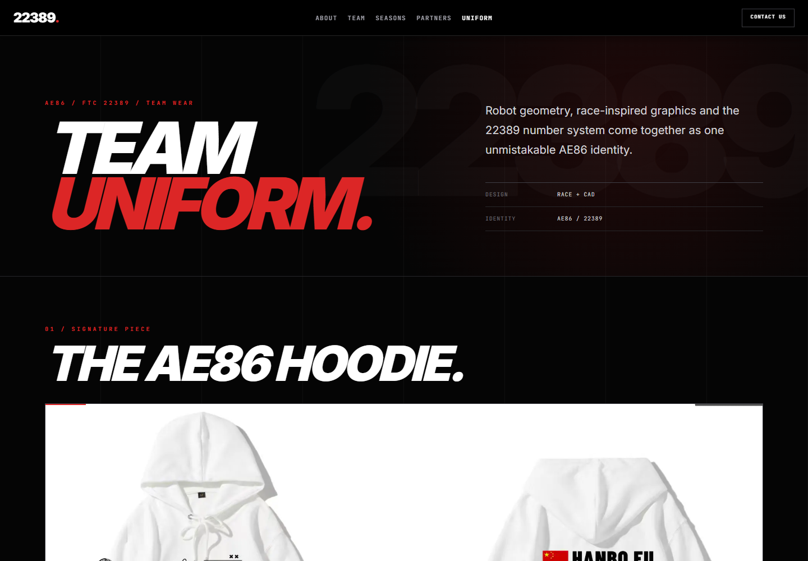
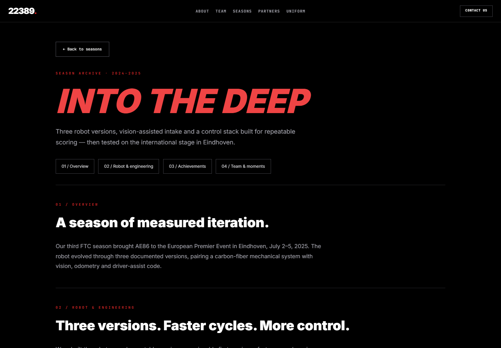

Team website / AE86 FTC 22389
A team.
A shared story.
I built a website for the AE86 FTC team, bringing its identity, season history, and team information together.
Explore the website
Fresh captures of the existing local website build, November 3, 2026. Team achievements shown within the site belong to the team.







Making the team visible
The site gives visitors a clear introduction to AE86, then provides dedicated season pages and a uniform page. Each page has its own purpose while sharing the same team identity.
Built to be browsed
The repository uses Vue with pre-rendered routes. The local build was opened to capture the homepage, two season pages, and the uniform page shown above.
My contribution here is the website. The robots and competition stories it presents are team work.